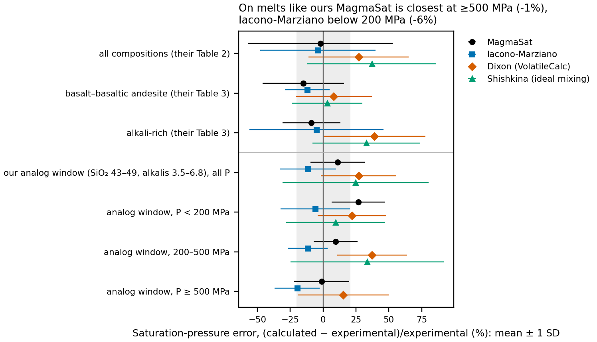
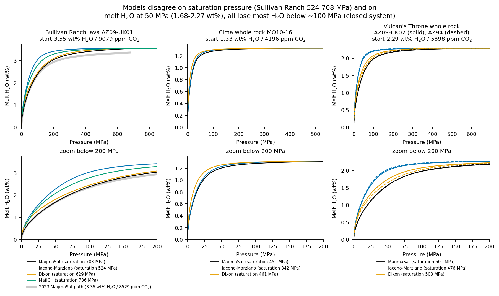
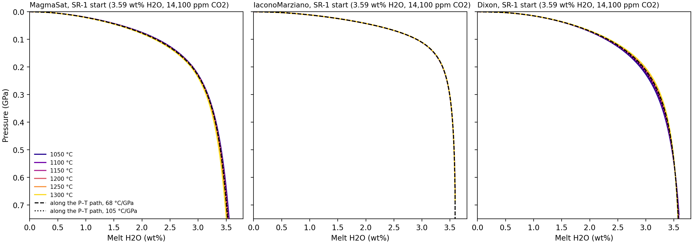

Appendix C — Degassing models
This appendix holds the evidence for the choice of solubility model, the comparison of the four models, the starting-melt paths with their refreshed saturation pressures, the temperature test of the solubility models, and the way the equilibrium boundary meets the measured xenolith rims. The main text uses the result: one closed-system MagmaSat path from the published MiMiC start, with the CO2/Nb start (SR-1) as the second scenario (Chapter 8).
C.1 Accuracy on melts like ours
Every degassing path is computed from one starting melt (H2O, CO2, composition, temperature) at its saturation pressure down to 1 bar. Four mixed H2O–CO2 solubility models were compared (Figure C.1, Table C.1): MagmaSat, Iacono-Marziano and Dixon (all through VESIcal) and MafiCH (Allison et al. 2022). Shishkina was assessed but not run on the path grid.
Hughes & Saper (2026 preprint) evaluate the VESIcal models on 770 vapor-saturated experimental glasses. Their per-experiment outputs were recomputed for an analog window around the SR melts (volatile-free SiO2 43–49 wt%, Na2O + K2O 3.5–6.8 wt%, T < 1350 °C): 111 experiments on 8 compositions, reaching 620 MPa at most. Recomputing their own Table 2 from these files reproduces the paper (for example MagmaSat −1.6 / 54.7 against their −2 / 55), which checks the scorer.

| Analog window, pressure bin | MagmaSat | Iacono-Marziano | Dixon | Shishkina |
|---|---|---|---|---|
| All pressures | +11 / 21 (62) | −12 / 21 (82) | +27 / 29 (81) | +25 / 56 (39) |
| P < 200 MPa | +27 / 20 (14) | −6 / 26 (33) | +22 / 26 (37) | +9 / 38 (10) |
| 200–500 MPa | +10 / 17 (34) | −12 / 15 (27) | +37 / 27 (32) | +34 / 58 (28) |
| ≥ 500 MPa (500–620) | −1 / 21 (14) | −20 / 17 (22) | +15 / 35 (12) | n = 1 |
A model that overpredicts saturation pressure for a given melt H2O underpredicts H2O solubility at a given pressure. For nearly pure H2O vapor, dissolved H2O goes roughly as the square root of pressure, so MagmaSat’s +27 % bias below 200 MPa corresponds to about −11 % in dissolved H2O. That is the direction and roughly the size of MagmaSat’s low late-stage H2O (0.67 against 0.92 wt% for Iacono-Marziano at 10 MPa on SR-1). Below 200 MPa the analog test therefore favors Iacono-Marziano, but on 14 MagmaSat and 33 Iacono-Marziano experiments only. The saturation-pressure uncertainty to carry is about ±20 % (1σ) for both on analogs, and above about 0.6 GPa no model has been tested on compositions like ours.
C.2 Choice of model and comparison
- MagmaSat is primary. It is the most accurate model at 200–620 MPa on analogs, Hughes & Saper’s best model for alkali-rich melts (−9 / 22 %), the only model with no pressure ceiling in its calibration (our starts saturate at 0.43–1.7 GPa), it uses Fe3+/FeT, and it reproduces the 2023 path exactly.
- Iacono-Marziano is a sensitivity case, mainly below about 200 MPa. It is the most accurate model there on analogs. The two are never blended, because a switch or weighted blend at about 200 MPa would put a kink into dH2O/dP that the diffusion boundary would fit as a change in degassing rate. Only the isothermal olivine rate exists on this path (0.086 MPa/s against 0.155 on MagmaSat, a factor of 0.55); no P–T path or pyroxene fits were run on it [CHECK: run the Iacono-Marziano path through the P–T and joint fits if it is to be called co-primary].
- Dixon (VolatileCalc) is a sensitivity case. It reads +27 % high on analogs, it is outside its pressure calibration for every start, and its CO2 solubility depends directly on the SiO2 passed to it.
- MafiCH is a check. It is not in VESIcal and was not evaluated by Hughes & Saper. It is calibrated at 1200–1250 °C only, with a composition-independent H2O law (Lesne et al. 2011). Its CO2 calibration includes a basanite and a leucitite, and the SR inclusions sit inside its cation-fraction ranges (Ol23 at the edge in Si). On the 3.55 wt% / 9079 ppm reference start it saturates at 736 MPa and holds 2.07 wt% H2O at 50 MPa and 0.84 at 10 MPa, between MagmaSat and Iacono-Marziano.
- Shishkina is not recommended (precision 56 % on analogs, calibrated to 500 MPa only).

The four models are compared on one reference start per volcano in Figure C.2. Every SR path loses most of its H2O late. Half of the starting H2O is still dissolved down to 15–88 MPa, and the last 100 MPa removes 51–96 % of it. At 10 MPa every SR path holds 0.67–1.08 wt% H2O whatever its start: MagmaSat 0.67–0.74, Dixon 0.76–0.94, Iacono-Marziano 0.84–1.08. One factor at a time around the 3.55 wt% / 9079 ppm reference (Iacono-Marziano, closed), melt H2O at 10 MPa moves by 0.25 wt% with the model, 0.08 with CO2, 0.07 between closed and open, 0.05 with starting H2O (2.6–4.5 wt%), 0.02 with composition and less than 0.001 between 1166 and 1200 °C.
Open against closed. Open-system degassing keeps the melt 0.18–0.35 wt% wetter at 50 MPa but only 0.05–0.07 wt% wetter at 10 MPa, so the fits use closed-system paths, which also make the temperature correction simple.
C.3 Starting melts and saturation pressures
All SR paths use the AZ09-UK01 lava as analyzed (Plank & Forsyth 2016 Table S5; Fe3+/FeT 0.167). It is in equilibrium with Fo 85.3 against a host median of Fo 85.6 and carries no accumulated olivine, cpx or mantle debris. The inclusion mean (corrected for post-entrapment crystallization and Fe loss) is the composition bracket; it lowers the MagmaSat saturation pressure by about 10 % and changes melt H2O at 10 MPa by 0.02 wt% or less. The primary start is the published MiMiC melt (3.549 wt% H2O, 8,529 ppm CO2). The other starts carry 14,100 ppm CO2, the depleted-mantle CO2/Nb (239) times the melt Nb (59 ppm), the smallest undegassed CO2 that still lies above every reconstructed SR inclusion (Section B.7). Table C.2 gives their saturation pressures and Table C.3 the shape of each path. The starts span the H2O batches of Chapter 6: the published MiMiC melt (primary), SR-1 (wet end, CO2/Nb second scenario), SR-7 (wet end with Fe-loss correction), SR-6 (mixture of batches, the sensitivity case), SR-4 (dry batch) and Ol23 as trapped. The wet start was adopted because the intact interior WHT1 opx cores (about 411 ppm) with the opx-anchored partition coefficient are in equilibrium with 3.48 wt% melt H2O, within 2 % of the MiMiC start and 3 % of SR-1 (Section A.7).
data/original_volatiles_2026/starting_conditions_psat.csv. The two Iacono-Marziano values for SR-1 come from two scripts: 685 MPa is the start-pressure calculation and 670 MPa the saturation of the path used in the fits; they differ by 2 %.
| Start | H2O (wt%) | CO2 (ppm) | MagmaSat saturation (MPa) | Iacono-Marziano saturation (MPa) |
|---|---|---|---|---|
| Published MiMiC (primary) | 3.549 | 8,529 | 682 | not computed |
| SR-1, wet, CO2/Nb (second scenario) | 3.59 | 14,100 | 922 | 685 (670 on the fitted path) |
| SR-2, undegassed at the ocean-island CO2/Nb | 3.59 | 29,800 | 1438 | 990 |
| SR-3, as trapped (Ol23) | 3.55 | 9,080 | 708 | 535 |
| SR-4, dry batch | 2.20 | 14,100 | 927 | 735 |
| SR-5, inclusion-based melt | 3.59 | 14,100 | 833 | 625 |
| SR-6, mixture | 2.72 | 14,100 | 922 | 715 |
| SR-7, wet, Fe-loss corrected | 3.39 | 14,100 | 921 | 691 |
| Start | H2O at 50 MPa (wt%) | H2O at 10 MPa (wt%) | 10 % lost (MPa) | 50 % lost (MPa) | 90 % lost (MPa) | Olivine rate, isothermal / P–T path (MPa/s) |
|---|---|---|---|---|---|---|
| Published MiMiC (primary) | 1.69 | 0.70 | 248 | 54.9 | 2.8 | 0.143 / 0.093 |
| SR-1, wet, CO2/Nb (second scenario) | 1.60 | 0.67 | 341 | 62.6 | 3.1 | 0.155 / 0.101 |
| SR-1, Iacono-Marziano | 2.17 | 0.92 | 152 | 34.7 | 1.8 | 0.086 / not run |
| SR-7, wet, Fe-loss corrected | 1.58 | 0.67 | 322 | 57.6 | 2.8 | not run |
| Ol23 as trapped | 1.68 | 0.70 | 257 | 55.6 | 2.8 | 0.144 / not run |
| SR-6, mixture | 1.48 | 0.65 | 260 | 42.1 | 1.9 | 0.174 / 0.113 |
| SR-4, dry batch | 1.36 | 0.63 | 210 | 31.1 | 1.3 | not run |
At 200 MPa the dry and wet batches differ by 0.9–1.2 wt%; at 10 MPa by 0.04 wt% (MagmaSat) to 0.08 wt% (Iacono-Marziano), less than the 0.2–0.3 wt% between the two models. The batch moves where degassing begins, which is the deep part of the boundary curve that the opx and cpx rims see.
C.4 Temperature dependence of the solubility
The decompression fits put the diffusivity on the falling P–T path (Section A.4). The solubility side was tested separately: the SR-1 (CO2/Nb) and SR-6 starts were run at six isotherms from 1050 to 1300 °C, closed system, with MagmaSat, Iacono-Marziano and Dixon. The isotherms nearly coincide below about 300 MPa (Table C.4).

| SR-1 (CO2/Nb) start, closed | Saturation P, 1050 to 1300 °C (MPa) | P where half the H2O is lost (MPa) | H2O at 50 MPa (wt%) | H2O at 10 MPa (wt%) |
|---|---|---|---|---|
| MagmaSat | 847 to 1002 | 60.3 to 63.8 | 1.63 to 1.58 | 0.683 to 0.669 |
| Iacono-Marziano | 648 to 683 | 34.7 (flat) | 2.16 to 2.17 | 0.918 to 0.919 |
| Dixon | 735 to 854 | 55.8 to 53.8 | 1.71 to 1.74 | 0.830 to 0.833 |
Refit on the T-consistent MagmaSat path. Olivine Ol-2 and the WHT1 exterior opx and cpx were refitted with the solubility evaluated along the P–T path (slopes 46–120 °C/GPa) and compared with the same slopes on the 1200 °C path. Every rate changes by 3 % or less, and always slower (ratio 0.97–1.005): olivine 0.088 against 0.089 MPa/s at 90 °C/GPa and 0.050 against 0.051 at 120 °C/GPa; opx and cpx ratios 0.977–0.994. Solubility temperature is therefore a sensitivity, not a significant uncertainty; the choice of solubility model (0.55 times) and the diffusivity temperature (0.65 times) matter more.
C.5 The equilibrium boundary at the measured rims
The boundary condition of the diffusion model is the mineral H2O in equilibrium with the melt, K times melt H2O. Comparing it with the measured xenolith rims shows where along the path each rim could have formed (Table C.5; descriptive only: no diffusion is run).
| Measured exterior value (ppm) | Partition coefficient | Melt H2O in equilibrium (wt%) | Pressure where the boundary reaches it, all models (MPa) | MagmaSat only (MPa) |
|---|---|---|---|---|
| GCB1 olivine rim, 3.6 | 0.0009 (Towbin 2023) | 0.40 | 1.6–3.7 | 3.1–3.7 |
| GCB1 olivine core, 5.9 | 0.0009 | 0.65 | 4.0–9.5 | 7.9–9.5 |
| WHT1 opx rim, 158 | 0.009 (2023 prior) | 1.75 | 23–67 | 44–60 |
| WHT1 opx rim, 158 | 0.0118 (Novella × 0.93, current) | 1.34 | wet SR-1: 20 (Iacono-Marziano) | wet SR-1: 36 |
| GCB1 opx rim, 264 | 0.009 | 2.93 | 54–359 | 103–219 |
| WHT1 cpx rim, 261 | 0.012 (2023 prior) | 2.18 | 34–138 | 63–103 |
| WHT1 cpx rim, 261 | opx-anchored (opx × cpx/opx cores) | not tabulated | wet SR-1: 57 (Iacono-Marziano) | wet SR-1: 106 |
- Olivine. Every GCB1 olivine value sits far below equilibrium with undegassed melt (0.0009 × 3.55 wt% = 32 ppm). The rims (3.6–4.5 ppm) are reached only in the last 1.6–5.8 MPa and even the cores need melt with ≤ 0.75 wt% H2O. With the Peterson D_OH partitioning the rims are reached at 1.2–4.5 MPa, so the conclusion does not hinge on K.
- Opx. The WHT1 exterior rim is the strongest observed rim loss and forms only in the last few tens of MPa. It is robust to how the opx coefficient is set: 27–55 MPa (MagmaSat) or 15–31 MPa (Iacono-Marziano) across all strategies and batches.
- Cpx. The crossing depends on the coefficient strategy. With the experiment-based cpx coefficient the boundary starts below the measured rims, so the cpx would lose water from near saturation; opx-anchored or core-anchored, cpx rim loss starts at about 106–370 MPa (MagmaSat).
- The deep interior cores (WHT1 opx about 411 ppm, intact) are above the boundary at the start for the drier batches but match the wet start (the MiMiC and CO2/Nb starts both), which is the basis of the start choice.
The equivalent figure for the current coefficients is in Chapter 8. The “2023 prior” rows use the 2023 coefficients (opx 0.009, cpx 0.012) on mixed paths [CHECK: regenerate the 2023-prior rows and tabulate the cpx opx-anchored melt H2O with the opx-anchored K 117.7 on SR-1 if the table is kept in the paper].
C.6 CO2 and published rates
A side question is whether CO2 content orders the published rates, since most cinder cones carry much less CO2 than SR (Table C.6).
data/literature_ascent_rates/high_co2.csv.
| Eruption | Maximum melt-inclusion CO2 (ppm) | Rate (MPa/s) | Method | Notes |
|---|---|---|---|---|
| Sullivan Ranch (this study) | 9,079 (Ol23, bubble-corrected); primary start 8,529 (published MiMiC); second scenario 14,100 | 0.093 (0.055–0.154) | H in olivine (P–T path) | cinder cone with mantle xenoliths |
| Etna 3930 BP Fall Stratified (Barth 2024) | 9,600 (rehomogenized) | 0.47 (0.16–1.28) | H in olivine (Fo 90–91) | subplinian picrite |
| Fuego 1974 | 300–450 measured (a few above 500) | 0.38–0.45 | olivine H, embayments | subplinian arc basalt |
| Seguam 1977 | ~900 (model input) | 0.04–0.36 | olivine H, embayments | violent Strombolian |
| Kilauea Iki 1959 | ≤ 590 (rehomogenized; secondary) | 0.05 | olivine H, embayments | Hawaiian fountain |
| Cerro Negro 1992 / 1995 | 600–1,260 (model input / abstract) | 0.001–0.03 | olivine H, melt inclusions | arc cinder cone |
| Fogo (DeVitre 2023) | ~20,000 (secondary; bubble status unknown) | 0.0005–0.05 | melt inclusions | ocean-island basanite |
| Ross Island, Hut Point (Rasmussen 2017) | 2,000–18,000 (bubble-corrected) | ≥ 1 × 10⁻⁵ (authors’ minimum) | melt-inclusion H2O loss | basanite cones |
| La Palma Tajogaite 2021 (Zanon 2024) | ~14,000 (abstract) | ≈ 3 × 10⁻⁴ to 3 × 10⁻³ | fluid-inclusion barometry with seismicity | 85-day Strombolian/effusive eruption |
| Paricutin 1943 (Albert 2020) | not given | ≈ 0.002–0.03 | olivine Fe–Mg, Ni, P | whole-path average |
C.7 Methods and code
Code and outputs. scripts/degassing_paths/ writes data/degassing_paths_2026/ (cases.csv, paths.parquet, metrics.csv, xenolith_boundary.csv, figures/). The isotherms and the T-consistent refit are scripts/decompression/solubility_t.py. The starting-melt saturation pressures come from scripts/original_volatiles/start_psat.py and the MagmaSat runs from queue_magmasat.py, run_magmasat.sh and scripts/original_volatiles/collect_magmasat.py (control: 6814.82 bar reproduced). Tests: tests/test_degassing_paths.py.
Compositions. Anhydrous Plank & Forsyth (2016) analyses with FeO and Fe2O3 split at each vent’s Fe3+/FeT, normalized to 100 − H2O − CO2 (VESIcal “fixedvolatiles”). The original-volatiles starts use the oxides, Fe3+/FeT (0.167) and temperature in data/original_volatiles_2026/starting_conditions.csv. No composition is used for another volcano.
Grid. SR: three compositions (lava AZ09-UK01, scoria AZ09-GCB, inclusion mean) × H2O 2.6, 3.1, 3.55, 4.0, 4.5 wt% × CO2 3141, 5755, 9079 and 14,100 ppm at 1200 °C, plus three runs at 1166 °C and the original-volatiles starts. Cima and Vulcan’s Throne were run on their own compositions only (not used for rates). Pressure steps from the saturation pressure: 10 MPa above 200 MPa, 5 MPa to 20 MPa, 1 MPa to 1 MPa, then 0.5 and 0.1 MPa.
Iacono-Marziano and Dixon (run_fast.py). VESIcal 1.2.12 on the host. Closed system: calculate_degassing_path(fractionate_vapor=0). Open system: one step at a time with CO2 below 1e-6 wt% set to zero, because VESIcal-Dixon can stall in its Redlich–Kwong volume loop once dissolved CO2 reaches about zero (a change of at most 2e-6 wt% H2O). Each path has a 300 s limit, and paths with missing steps are rejected (none occurred).
MagmaSat (queue_magmasat.py, magmasat_path.py, run_magmasat.sh). The ENKI ThermoEngine container (VESIcal 1.2.10), one subprocess per path with a 2 h limit and a per-path cache. Check: run on the exact 2023 pressure list (3.36 wt% H2O, 8528.8 ppm CO2, Fe3+/FeT 0.17, 1200 °C), MagmaSat reproduces the 2023 path file at all 202 rows to 1.1e-4 wt% H2O.
MafiCH (run_mafich.py). The authors’ supplement script, run through a driver copy, with temperature fixed at 1200 °C, 25 ppm CO2 steps and total Fe as FeO. Its paths stop at about 10 ppm CO2 (4–5 MPa closed, 80 MPa open), so they do not reach the final stage.
Dixon normalization. VESIcal’s Dixon model reads SiO2 as given. Scaling the oxides to 100 − H2O − CO2 lowers SiO2 by 1.4–3.0 wt%, which Dixon reads as a more alkaline melt, so the Dixon paths here (hydrous normalization) understate Dixon’s saturation pressures by 11–25 %. Dixon is a sensitivity case only, so this changes no result.
Isotherms and the T-consistent path. In a closed system melt H2O at (P, T) depends only on P, T and the bulk volatiles, so the path along \(T(P) = 1330\ \mathrm{°C} - s\,(2.26\ \mathrm{GPa} - P)\) is the isotherms interpolated linearly in T at T(P) for each P. All 432 fast paths and all 10 new MagmaSat isotherms ran without failures. Control: the 1200 °C-path control reproduces the path fits (olivine 0.089 at 90.4 °C/GPa against 0.090 at 90 °C/GPa).
Xenolith boundary. Unflagged xenolith rows of data/compiled/csv/T1_SIMS_NAMS.csv, medians by xenolith, mineral, position and core or rim. For each path, the pressure at which K × melt H2O falls to the measured value is interpolated; the current-coefficient crossings are from scripts/model_choices/anchoring.py.